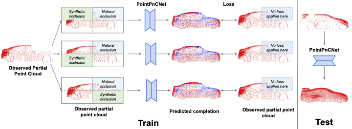

We adopt an inpainting-based approach for self-supervised point cloud completion
to train our network using only partial point clouds. Given a partial point cloud as input, we
randomly remove regions from it and train the network to complete these regions using the
input as the pseudo-ground truth. The loss is only applied to the regions which have points in
the observed input partial point cloud (red). Since, the network cannot differentiate between
synthetic and natural occlusions, the network predicts a complete point cloud.
When navigating in urban environments, many of the objects that need to be tracked and avoided are heavily occluded.
Planning and tracking using these partial scans can be challenging. The aim of this work is to learn to complete these partial point clouds,
giving us a full understanding of the object's geometry using only partial observations. Previous methods achieve this with the help of complete,
ground-truth annotations of the target objects, which are available only for simulated datasets. However, such ground truth is unavailable for
real-world LiDAR data. In this work, we present a self-supervised point cloud completion algorithm, PointPnCNet, which is trained only on partial
scans without assuming access to complete, ground-truth annotations. Our method achieves this via inpainting. We remove a portion of the input data
and train the network to complete the missing region. As it is difficult to determine which regions were occluded in the initial cloud and which
were synthetically removed, our network learns to complete the full cloud, including the missing regions in the initial partial cloud. We show
that our method outperforms previous unsupervised and weakly-supervised methods on both the synthetic dataset, ShapeNet, and real-world
LiDAR dataset, Semantic KITTI.
Problem Definition
The point cloud completion problem can be defined as follows: given an incomplete set of
sparse 3D points X, sampled from a partial view of an underlying dense object geometry G,
the goal is to predict a new set of points Y , which mimics a uniform sampling of G.
Self-Supervised Inpainting
In our self-supervised inpainting-based approach to learn to complete full point clouds using
only partial point clouds, we randomly remove regions of points from a given partial point
cloud and train the network to inpaint these synthetically removed regions. The original
partial point cloud is then used as a pseudo-ground truth to supervise the completion. The network leverages the information of available regions across samples and embeds
each region separately that can generalize across partially occluded samples with different
missing regions. Further, due to the stochastic nature of region removal, the network cannot
easily differentiate between the synthetic and original occlusions of the input partial point
cloud, making the network learn to complete the point cloud.
Network Architecture
PointPnCNet Architecture: Our method first estimates a canonicalized orientation of a partial point cloud, which has some regions missing due to natural occlusions. We
then randomly drop one or more of the regions to create additional synthetic occlusions. We
compute global features eg and local features P` which we combine into an encoding P. Our
multi-level decoder uses the encoding P to generate a completed point cloud. The global
shape loss and local shape loss are only applied to the regions of the output where points
are present in the original cloud (before synthetic occlusions) which are shown in red in X, Yg, and Y`. The blue points in Yg and Y` are not present in the original cloud, so we have no
ground truth about their positions; thus they are not penalized in the loss. The final output of
the network is the concatenation of the outputs from Yg and Y`.
Multi-Level Encoder : Our encoder consists of multiple, parallel encoder streams that encode the input partial point
cloud at global and local levels. The global-level encoder operates on the full-scope of
the object while a local-level encoder focuses on a particular region of the object. Since
a local encoder only sees points in a given local region and is invariant to other parts of
the shape which may be missing, local encoders make the network robust to occlusions
by focusing on individual object parts separately. Global encoder further enhances shape
consistency by focusing on regions jointly with each other.
Multi-Level Decoder: Our decoder consists of multiple decoder streams that work in parallel to decode the fused
embedding P. The multi-level output generated by the network captures the details of the object at global
and local levels.
Losses
Nearest Neighbor Loss
For large unlabeled datasets, since we do not have ground truth labels, we cannot compute the supervised loss. We use the nearest neighbor of our transformed point as an approximation for the true correspondence. For each transformed point in predicted point cloud, we find its nearest neighbor in Y and compute the Euclidean distance with that point.
Cycle Consistency Loss
To avoid degeneracies caused by cycle loss, we incorporate an additional self-supervised loss: cycle-consistency loss. We first estimate the forward flow to get a predicted point cloud. We then compute the scene flow in reverse direction under the cyclic assumption that the prediction of the reverse cycle should be similar to point cloud X.
Anchored Cycle Consistency Loss
In order to avoid unstable results and correct the structural distortions, we compute the anchored reverse flow by taking an average of prediction of foward cycle and point cloud Y.
Temporal Flip Augmentation
Having a dataset of point cloud sequences in only one direction may generate a motion bias. To reduce this bias, we augment the training set by temporally flipping the point clouds i.e. reversing the flow.
Experiments
Datasets Used : nuScenes and KITTI
Evaluation Metric : EPE, Acc1 (0.05), Acc2 (1.0)
Self-Supervised training on nuScenes
We begin with training our self-supervised model on nuScenes dataset using the combination of Nearest Neighbor Loss and Anchored Cycle loss. Since we wish to use Flownet3D as our scene flow estimation module, we initialize our network with Flownet3D weights pretrained on FlyingThing3D dataset.
Self-Supervised training on nuScenes and KITTI
Once the model has been trained on nuScenes, we fine-tune on KITTI in a self-supervised manner. For the comparison with the baseline, we use the Flownet3D model pretrained on FlyingThings3D without any fine-tuning on KITTI.
Supervised fine-tuning on KITTI
In order to evaluate the performance of our method on the real-world datasets having ground truth flow annotations, we fine tune our model on KITTI. For our method, we pretrain the model on nuScences using our self-supervised loss, and then introduce the KITTI data for supervised fine tuning. For the baseline, we use Flownet3d which is supervised fine tuned over the KITTI dataset. Both models are initialized with Flownet3D weights pretrained on FlyingThings3D.
This material is based upon work supported by the National Science Foundation under Grant No. IIS-1849154,
and the CMU Argo AI Center for Autonomous Vehicle Research.
{kind=link}